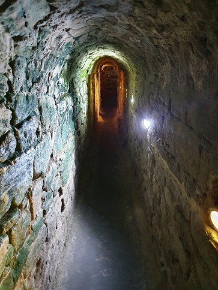

|
MEDINA SIDONIA Medina Sidonia está poblada desde el Bronce final. La antigua Asido Caeserina romana, de la que se conservan restos del siglo I. Alcanzó el estatus jurídico como Colonia de Derecho Romano. El conjunto arqueológico está compuesto por construcciones hidráulicas del siglo I, con un total de 20m de cloacas de época romana, descubiertas en 1969. Los muros están construidos con sillares de piedra arenisca y las bóvedas son de medio cañón corrido. El suelo es el original y está impermeabilizado por una capa formada por una mezcla de cerámica triturada de cal. Ver Video
 También destaca sus habitaciones romanas y criptopórticos, que nos indica el grado de urbanización de la ciudad Asido-Caesarina. La calzada romana es espectacular. Descubierta en 1997 está construida con grandes losas de piedra, se compone de dos aceras y la calzada con metros de ancho, permitiendo el paso de dos vehículos a la vez. En el eje central de la calle, por debajo del enlosado, se halla una cloaca de casi un metro de altura. Se han encontrado también un par de tableros de juego grabados sobre las losas de una de las aceras.
En el conjunto arqueológico "Cerro del Castillo", se aprecian las tres fortificaciones superpuestas. El castellum militar romano, los restos del alcázar árabe y los restos del castillo medieval. Más info: http://www.medinasidonia.es
|